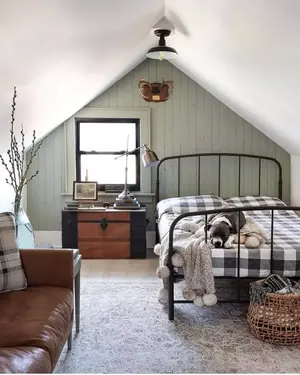
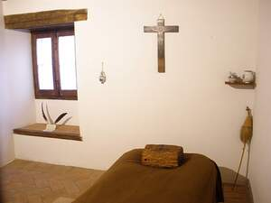

ⲣⲓ SB, ⲣⲉⲓ S (Mor 37 13, Baouit 120), ⲗⲓ F nn f, not biblical, cell, rooma monk's, hermit's: Z 343 S = MG 25 208 B ⲧⲣⲓ of Abba Macarius, HL 98 B I built ⲧⲁⲓⲣⲓ κέλλα, Z 344 S = MG l c B sim, ROC 25 240 B ⲟⲩⲣⲓ ⲉⲥⲟⲣϥ, Z 294 S wherein hermit & disciple dwell, EW 194 B ⲛⲧⲉⲕϩⲉⲙⲥⲓ *ϧⲉⲛⲧⲉⲕⲣⲓ κελλίον; Mor 48 30 S = BM 364 S ⲕⲟⲩⲓ ⲛⲣⲓ built on mount (desert) = Rec 6 183 B, ib S = ib B same called ⲥⲡⲏⲗⲁⲓⲟⲛ, ShC 73 58 S inspection of ⲣⲓ ⲛⲓⲙ in monastic houses, C 89 32 B cell in monastery = Va ar 172 20 خزانة = MG 17 390 كبية (l كيبة κύπη); BAp 80 S dwelt in small ⲣⲓ within ⲃⲏⲃ (equivalence of ⲣⲓ & ⲃ. v Ep 1 128), PSBA 10 194 S in ⲣⲓ on south of church, AM 180 B small ⲣⲓ built in his dwelling (τόπος), BM 346 S hermit arrested in ⲡⲙⲁ ⲛⲧⲉϥⲣⲓ, Gött Nachr '99 38 B ⲫⲙⲁ ⲛⲑⲣⲓ ⲙⲡⲓϧⲉⲗⲗⲟ, Saq 48 S ⲧⲣⲓ ⲛⲁⲡⲁ abbot's cell, Baouit 105 S sim, EW 106 B bishop's, BM 1130 S ⲧⲣⲓ ⲛⲛⲉⲕⲟⲩⲓ novice house, BMOr 6204 B S ⲡⲓⲱⲧ ⲉⲧⲣⲓ (ⲛ)ⲛⲉⲕⲟⲩⲓ, Miss 4 163 B ϯⲛⲓϣϯ ⲛⲣⲓ in monast of Macarius = PSBA 29 290 دنشتري, BAp 124 S Pesenthius dying in ⲧⲛⲟϭ ⲛⲣⲓ, BM 727 B ⲑⲣⲓ ⲛϯⲉⲕⲕⲗⲏⲥⲓⲁ of Macarius.b room in house: MG 17 321 S = C 89 68 B house with ϣⲉ ⲛⲣⲓ τόποι ἤ κελλία, PBu 3 S house contains ⲟⲩⲣⲓ, συμπόσιον, κοιτών (cf κέλλα e g PMon 97), J 35 27 S ⲧⲣⲓ beneath staircase, ib 73 21 S share in ⲧⲣⲓ (ⲉ)ⲧⲁϩⲉⲓ ⲉϫⲱⲓ, BM 673 F ⲧⲥⲏⲛⲧⲉ (ⲉ)ⲗⲓ…ⲉⲧⲥⲁⲡⲓⲏⲃⲧ, ⲧⲗⲓ (ⲉ)ⲧⲥⲁⲫⲓⲗ; cf PLille 1 84;prison cell: C 43 243 B cast into ϯⲣⲓ ⲉⲧⲥⲁϧⲟⲩⲛ, ib 115 B ⲟⲩⲣⲓ ⲛⲭⲁⲕⲓ, Mor 41 339 S ⲣⲓ filled with dung;WTh 175 S cast into ⲣⲓ ⲛⲥⲉϯ ⲕⲱϩⲧ ⲛⲁϥ, Ep 466 S ⲛⲣⲓ ⲙⲡⲙⲁ ⲛⲧⲱⲕ GFr 430 S sick sheep cast into ⲟⲩⲣⲓ ⲏ ⲕⲉⲧⲟⲡⲟⲥ.As place-name: ⲛⲣⲓ S (BM 216 80, Z 309), ⲛⲓⲣⲓ B (HL 111) τὰ Κελλία in Nitria.
(noun feminine)
construction
not biblical, cell, room [κελλα, κελλιον]
― monk's, hermit's
― room in house
― prison cell
― monk's, hermit's
― room in house
― prison cell


complete
135a
ⲗⲓ F v ⲣⲓ.
287b
See also:
| view | ϣⲧⲉⲕⲟ SALB ⲉϣⲧⲉⲕⲟ S ϣⲧⲉⲕⲁ F plural: ϣⲧⲉⲕⲱⲟⲩ SLB | (noun masculine) prison [φυλακη, δεσμωτηριον]355 |